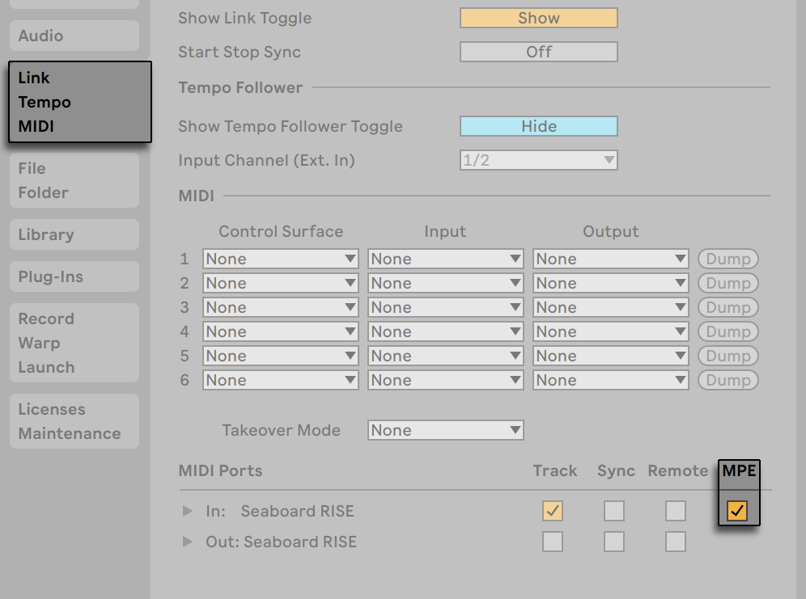
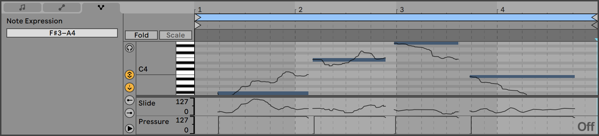
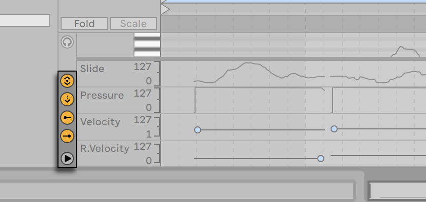
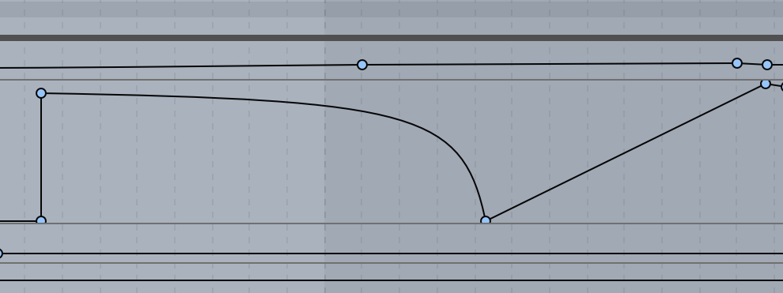
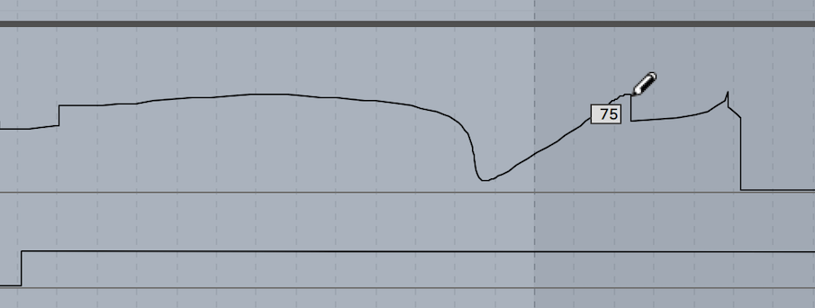
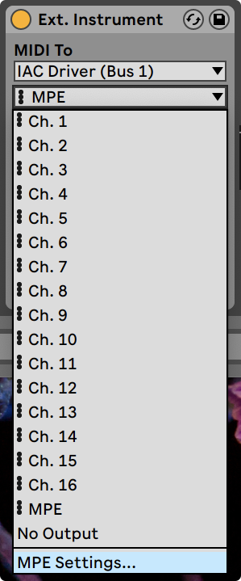
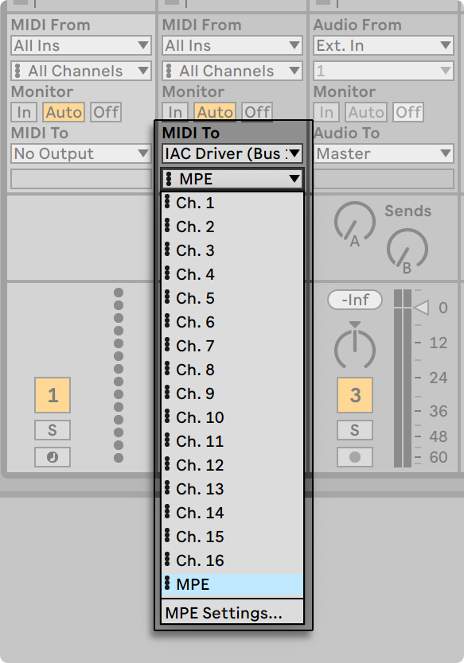
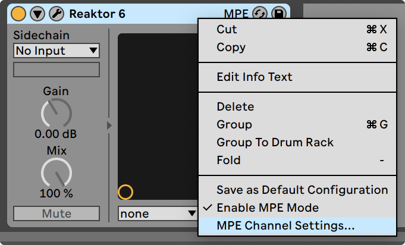

12. Editing MPE
MIDI Polyphonic Expression (MPE) is an extension to the MIDI specification that enables attaching parameter control information to individual notes, instead of globally per MIDI channel. This way of using MIDI allows MPE-capable devices to control multiple parameters of every note in real time for more expressive instrumental performances.
To enable Live to receive per-note expression from an MPE-capable MIDI controller, first enable MPE Mode in the Link, Tempo & MIDI Settings for that controller.

Note that when selecting a MIDI controller that has MPE enabled as an input device on a track, the channel input routing is fixed to “All Channels’’ and no individual channels can be selected.
For more information about working with MIDI controllers, please refer to the MIDI and Key Remote Control chapter. Once your controller is set up, you can use it to record new MIDI clips containing MPE data.
The Clip View’s Note Expression tab allows viewing and editing five dimensions of MPE for each note in a clip: Pitch (per-note pitch bend), Slide (per-note Y-Axis), Pressure (Poly Aftertouch/MPE Pressure), Velocity and Release Velocity (Note Off Velocity). This makes it possible to refine the expression of recorded material, or to automate polyphonic sound variations for MPE-capable instruments.
Note that you can view and edit MPE data for notes in all MIDI clips, regardless of whether those clips were created using an MPE-capable device or using other methods. We will look at viewing and editing MPE data in the following sections.
12.1 Viewing MPE Data

To view MPE data in a MIDI clip, first enter Clip View by double-clicking on a clip, then click on the Note Expression Tab or use the key command Alt3 (Win) / Option3 (Mac) to open the Expression Editors at the bottom of Clip View. Four of the five MPE parameters are contained in their own expression lane: Slide, Pressure, Velocity, and Release Velocity. By default, only Slide and Pressure are shown. Envelopes for the fifth parameter, Pitch, are displayed on top of their corresponding notes in the MIDI Note Editor.
Each expression lane can be shown or hidden via the lane selector toggle buttons at the left. Underneath the lane selector toggle buttons, a triangular toggle button allows showing/hiding all enabled lanes at once.

When all expression lane selectors are hidden/disabled, pressing the triangular toggle button will show all expression lanes at once. Each expression lane can be resized individually via their split lines. All expression lanes can be resized simultaneously by dragging the split line between the lanes and the MIDI Note Editor.
Pressing Alt (Win) / Option (Mac) and clicking the triangular toggle button displays all expression lanes. When hiding the expression lanes using the triangular toggle button, or by dragging the Expression Editor View split line, the lane visibility toggles are hidden as well.
MIDI track meters will display MPE per-note controller changes. The lowest dot in a meter lights up in a blue color if per-note controller changes pass that meter.
12.2 Editing MPE Data
When clicking a note (or any of its expression dimensions) in the MIDI Note Editor while the Note Expression tab is open, the note will appear in a transparent overlay. Envelopes appear, along with any existing breakpoints, to allow editing the note’s Pitch, Slide, and Pressure envelopes, while markers can be used to edit the note’s Velocity and Release Velocity values. Unselected notes will appear grayed out, and their expression envelopes will be dimmed.

After clicking on the note or envelope you wish to edit, all expression breakpoints for the chosen envelope and the line segments connecting them become draggable objects. Clicking and dragging in the envelope’s background defines a selection. Here’s how editing MPE data works:
- Click at a position on a line segment to create a new breakpoint there.
- Click on a breakpoint to delete it.
- To help you edit breakpoints more quickly, expression values are shown when you create, hover over, or drag a breakpoint. Note that when hovering over or dragging a selected line segment, the expression value shown will correspond to the breakpoint value at the cursor’s current position.

- Click and drag a breakpoint to move it to the desired location. If the breakpoint you are dragging is in the current selection, all other breakpoints in the selection will follow the movement.
- Right-click on a breakpoint and choose Edit Value from the context menu. This allows you to set an exact value in the editable field using your computer keyboard. If multiple breakpoints are selected, they will all be moved relatively. Similarly, you can also create new breakpoints at an exact value by right-clicking on a preview breakpoint and choosing the Add Value command.
- Click near (but not on) a line segment or hold Shift and click directly on a line segment to select it. With the left mouse button held down, drag to move the line segment to the desired location. If the line segment you are dragging is in the current time selection, Live will insert breakpoints at the selection’s edges and the entire segment will move together.

- In the Note Expression tab, the grid is disabled by default for easier editing at a finer resolution. Note that the grid’s settings are separate from the grid in the other tabs, and they are saved with the clip.
- If needed, you can enable the grid using the Snap to Grid options menu entry or the Ctrl4 (Win) / Cmd4 (Mac) shortcut. When the grid is enabled, breakpoints and line segments will snap to time positions where neighboring breakpoints exist. Breakpoints created close to a grid line will automatically snap to that line.
- When moving a line segment or breakpoint, hold Shift while dragging to restrict movement to either the horizontal or vertical axis.
- Holding down the Shift modifier while dragging vertically allows you to adjust the breakpoint or line segment value at a finer resolution.
- You can remove a neighboring breakpoint by continuing to drag a breakpoint or line segment “over” it horizontally.
- Hold Alt (Win) / Option (Mac) and drag a line segment to curve the segment. Double-click while holding Alt (Win) / Option (Mac) to return the segment to a straight line.

- Except for the Pitch expression envelope, you can scale Slide, Pressure, Velocity and Release Velocity envelopes proportionally across a note’s entire duration, similar to that of velocities for multiple selected notes. To so do, first click outside of the note’s area, then hover the mouse above the desired envelope. When the envelope turns blue, click and drag up or down, and the envelope will be scaled accordingly. This is also the behavior when editing expression envelopes for multiple selected notes at once.
- You can also adjust all selected breakpoints equally, rather than scaling them. To do so, first click on the envelope you wish to edit, then use CtrlA (Win) / CmdA (Mac) to select all of the breakpoints, then drag up or down with the mouse as desired to increase or decrease their value; dragging left or right will move all breakpoints horizontally as a group.
- When a note is moved, its expression envelopes will move along with it.
- Stretching a MIDI note using the MIDI stretch markers in the MIDI Editor or the ÷2 and x2 buttons in the Notes tab will cause any per-note expression belonging to that note to be stretched as well.
- Pitch breakpoints snap to the nearest semitone when pressing Alt (Win) / Cmd (Mac) while the grid is off. This also works for Pitch values in Draw Mode. This behavior can be bypassed using the same shortcuts when the grid is on.
- Pitch envelopes are hidden when Fold Mode is enabled in the Note Expression tab.
- When the Note Expression tab is open, using the Zoom to Clip Selection command or Z key shortcut adjusts the zoom level according to pitch bend values contained in the time selection.
- When the Note Expression tab is open, the Clear All Envelopes entry in the context menu of the MIDI Note Editor and per-note expression lanes clears all expression envelopes of one or multiple selected notes.
12.3 Drawing Envelopes
With Draw Mode enabled, you can click and drag to free-handedly “draw“ an envelope in the Pitch, Slide and Pressure expression lanes.
To toggle Draw Mode for MPE data, select the Draw Mode Option from the Option menu, click on the Control Bar’s Draw Mode switch, or press B, then click on the envelope you wish to edit. Holding B while editing with the mouse temporarily toggles Draw Mode.

Holding down the Shift modifier while dragging vertically allows you to adjust the expression value of a step at a finer resolution.
When the grid is enabled using the Snap to Grid options menu entry or the Ctrl4 (Win) / Cmd4 (Mac) shortcut, drawing creates steps as wide as the visible grid, which you can modify using a number of handy shortcuts. To temporarily enable drawing in the grid while it is disabled, hold down Alt (Win) / Cmd (Mac) while drawing.
12.4 MPE in Live’s Devices and on Push 2
Many Live devices support MPE and include MPE presets that bring new dimensions of interaction and playability to your sound. The expressive possibilities within these devices also enable you to take advantage of polyphonic aftertouch on Push 2.
12.5 MPE in External Plug-ins
MPE data for MPE-enabled plug-ins can also be accessed and modulated in Live.
The enabled/disabled state of a plug-in device’s MPE Mode will be saved with that device’s default configuration.
Plug-ins that have MIDI outs and that have MPE enabled can also output MPE.
12.6 MPE/Multi-channel Settings
To set up a specific MPE configuration, you can access a MPE/Multi-channel Settings dialog box from:
- The Ext. Instrument device.
- The I/O section of Live’s mixer.
- The context menu of an MPE-enabled plug-in.
These settings can be used for hardware synths that require a specific MPE configuration, or plug-ins that do not officially support MPE but can be used with MPE controllers due to their multi-timbral support.
12.6.1 Accessing the MPE/Multi-channel Settings Dialog
In the Ext. Instrument device, you can choose your Routing Target in the MIDI To drop-down menu. Then select MPE from the second drop-down, open the menu again, and select MPE Settings…

To access these settings in the I/O section of the mixer, make sure you have the device you want to control selected in the MIDI To section of the MIDI track’s output and choose MPE from the MIDI To drop-down menu in the Session or Arrangement Mixer, then open the drop-down menu again and choose MPE Settings…

For MPE-enabled plug-ins, you can find these settings in the context menu of the respective device’s title bar.

12.6.2 The MPE/Multi-Channel Settings Dialog

You can use the settings to:
- Configure the MPE zone and range of note channels used by Live when sending MPE to an external MIDI device or plug-in.
- Select the upper or lower zone and number of note channels.
- Select multi-channel mode, which sets an arbitrary range of note channels.
There are settings available for the lower zone and upper zone. A track can only output to a single zone, so to use both zones, set up two tracks.
Each zone needs a global channel (for non-polyphonic controls). The global channel for the lower zone is Channel 1, and Channel 16 is for the upper zone. You can also assign a range of the other MIDI channels to each zone (in general the number of channels you assign to a zone is linked to the amount of polyphony you want in that zone). An example zone configuration might be to use channels 1-11 for the lower zone and channels 12-16 for the upper zone.
Note: Live only supports zones for MPE output, which is particularly useful for hardware synths that require a particular zone configuration.
These settings can also be used, for example, to connect two MPE synths to the same MIDI interface (again, one connected through the MIDI thru of the other), or setting up a synth that knows how to control two different sounds by assigning them to different zones. You can set up two MIDI tracks in Live, routed to the same MIDI output device, but configuring one track for the lower zone and the other for the upper zone.